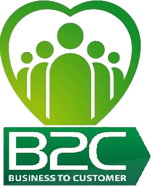

En B2C Business to Customer ayudamos a empresas y personas a potenciar Habilidades Blandas utilizando el poder del Art Thinking.
Se conocen como Habilidades Blandas (soft skills) a las cualidades personales que están arraigadas en nuestra inteligencia emocional, y nos definen como individuos, permitiéndonos relacionarnos de manera cordial y efectiva con los demás en todo tipo de situaciones.
Por lo tanto, son habilidades intangibles, pero sumamente valoradas, sobre todo en el mundo laboral, ya que nos ayudan a comunicarnos eficientemente, resolver conflictos y adaptarnos a cambios entre otras cosas.
Algunas habilidades blandas top son el liderazgo, la empatía, la comunicación efectiva, la adaptabilidad para trabajar en equipo, la gestión eficiente del tiempo y la creatividad.
Desarrollar habilidades blandas puede ser un proceso a veces incomodo, porque los empleados deben primero hacer un ejercicio de autorreflexión para saber que habilidades especificas necesitan reforzar.